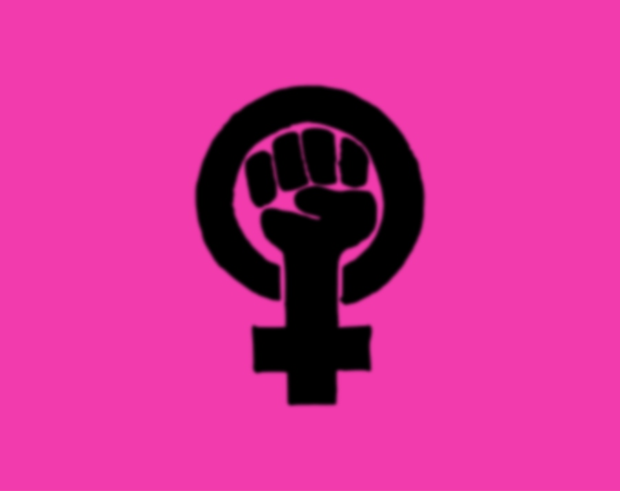

This was a hashtag created to create a culture of women supporting women.
Women gathered to raise awareness of feminism. Over 500,000 women marched on the nation's capital, and it was estimated that 4.2 million people marched around the world!
This spread awareness about sexual assault and gave women a voice to share their own experience. This led to the creation of the Time's Up Initiative, started by 300 women in Hollywood.
Feminism is strongly known for beginning in the early eighteen hundreds resulting later with the 19th amendment introducing the womens' right to vote, and then with second wave feminism in the sixties and seventies with the more aggressive feminism. Today a new feminism has emerged and has become more widespread, especially with the power of social media. This new wave of feminism has used social media to it's full potential, bringing issues to light, giving platforms for discussions. The more level playing field that social media creates gives women a fair platform compared to other media outletes. This new frontier has created feminist discussions bringing people from all walks of life together for a common goal.
Today a new feminism has emerged and has become more widespread, especially with the power of social media. This new wave of feminism has used social media to it's full potential, bringing issues to light, giving platforms for discussions. The more level playing field that social media creates gives women a fair platform compared to other media outletes. This new frontier has created feminist discussions bringing people from all walks of life together for a common goal.
Social Media has encouraged people to speak out about what is wrong and what we can do together to fix it. The modern-day feminism has used social media to the fullest, using it to organize and bring women together and representing women different than the traditional media. With the power of social media it can be used to bridge the gap that women are born with . The awareness raised through social media has started the conversation that needed to be have.